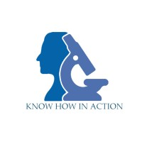

Yugant Gajera!
Lead Machine Learning Engineer based in New York🗽, with over
1+ years of demonstrated experience spearheading initiatives in
Applied NLP & Large Language Models (LLMs) & Computer Vision.
Welcome to my portfolio
Click here.
Work Experience

CPFPI Inc.
Network Administrator Intern
- Configured, monitored, and maintained a complex network infrastructure comprising over 60 network devices, including high-performance routers, switches, and next-generation firewalls, to ensure seamless connectivity and achieve 99.9% uptime for critical business operations.
- Provided support to a network of over 250 users spread across multiple geographical locations, addressing network performance issues, ensuring optimal bandwidth allocation, and resolving connectivity bottlenecks within established SLA timelines.
- Proactively enhanced the organization's cybersecurity posture by implementing advanced firewall configurations, including intrusion prevention systems (IPS), and deploying robust encryption protocols for data in transit, reducing the risk of cyber threats by 40%.
- Strengthened data integrity and confidentiality by applying updated network access controls, securing communication channels, and conducting regular vulnerability assessments, leading to a measurable 30% improvement in overall data protection.
June 2024 – August 2024
Vasundhara Infotech Pvt Ltd.
Junior A.I. Developer Intern
- Spearheaded the development of a cutting-edge Generative AI solution leveraging OpenAI's API, collaborating with and guiding a team of six to conceptualize and implement an advanced cognitive document processing system tailored to meet organizational needs.
- Revolutionized financial record management by streamlining the processing and storage of data, achieving 100% adoption by internal teams, and significantly reducing manual labor by 75%, leading to improved operational efficiency.
- Utilized prompt engineering techniques with the latest GPT-3 APIs to ensure optimized model responses, enhancing the functionality of AI-powered solutions.
- Innovatively employed Python libraries such as Textract and PyPDF2 to automate the extraction of text from diverse document formats, generating structured and actionable data outputs that seamlessly integrated into a new, efficient record-keeping system, replacing the outdated legacy processes.
June 2024 – August 2024

Madras Scientific Research Foundation
Research Intern
- Acquired hands-on experience with the Dilated Inception U-Net approach, specifically applied to nuclei segmentation in cancer cell research, contributing to innovative advancements in computational pathology.
- Developed a robust framework combining machine learning and deep learning techniques, alongside custom-designed algorithms, to enhance the precision of cancer cell segmentation. Achieved an 81% diagnostic accuracy, underscoring the potential for data-driven methodologies in improving cancer diagnosis outcomes.
- Led the optimization of cancer cell image preprocessing workflows, implementing sophisticated techniques such as binary and color masking for enhanced image clarity and segmentation accuracy. This resulted in a 40% improvement in the quality of datasets, significantly benefiting research publications and furthering scientific insights.
January 2022 – March 2022
Publications
Dilated Inception U Net for Nuclei Segmentation in Multi Organ Histology Images
Yash Thakre, Yugantkumar Gajera, Shrushti Joshi, Jose George
International Research Journal of Engineering and Technology (IRJET) oct- 2022
Education
Pace University, Seidenberg School of Computer Science and Information Systems
Master of Science (MS) in Computer Science
Specialization in Machine Learning
GPA 3.8/4.0
Coursework Highlights
- Advanced Natural Lanuage Processing - A PhD course, helping develop expertise in reproduction of state-of-the-art NLP research and technical publication writing.
- Advanced Computer Vision - A PhD course providing an overview on the traditional and Deep Learning techniques for Computer Vision.
- Information Retrieval - Examines key aspects of information retrieval as they apply to search engines; web crawling, indexing, querying and quality of results are studied.
- Machine Learning for Medical Data -A course that gives great insight on using Graph Neural Networks and strategies to handle highly imbalanced data and skewed data distribution.

Gujarat Technological University)
Bachelor of Engineering (B.Eng.) in Computer Engineering
GPA: 8.34/10.0

Technical Skills
Programming Languages
Python (Pandas, NumPy, Matplotlib, Seaborn, Scikit-learn, SciPy, TensorFlow, PyTorch, OpenCV, Keras)

Machine Learning Algorithms
Linear & Logistic Regression, Naïve Bayes, XGBoost, Random Forest, DT, K-Means, KNN, CNN, ANN
Data Visualization Tools & CI/CD
Tableau, Power BI, MATLAB, Google Analytics, Google Data Studio, MS Excel
Database Management
MySQL, PostgreSQL

Software &Tools
Google Colab, Google Cloud, Docker, AWS, Slack
Testimonials
“
Yugant is one of the best people to look for when you're looking to innovate. Along with his knowledge and experience in ML/AI field, he also has an inquisitive mind which helps him to learn more and more while motivating his team at the same time. He is strong-willed, soft-spoken, very good at people management and soft skills. He helped our team to kick-start the project with a positive force and I'm sure he'd do that in whichever project he works for in the future.

Krishnaranjani Raju
Co-Founder & CEO @ Madras Scientific Research Foundation
“
Yugant is a meticulous professional who holds immense knowledge in the field. He has a proactive approach to tasks, focusing on attaining maximum efficiency in the work he undertakes. Yugant’s affable personality along with his domain expertise allows him to lead projects in an organized and timely manner. He has been a great asset to our team and a pleasure to work with.
Ashvin Vaghani
CEO @ CPFPI CEO @ VSAR RResources LLC.
“
Yugant has very good hands on experience of Machine Learning and Computer Vision. We worked together to build a Deep Leaning based Video Analysis tool and I can say Yugant did a wonderful job in designing and helping to implement the project.
Chirag Pipaliya
Co-founder @ Vasundhara Infotech.Get In Touch